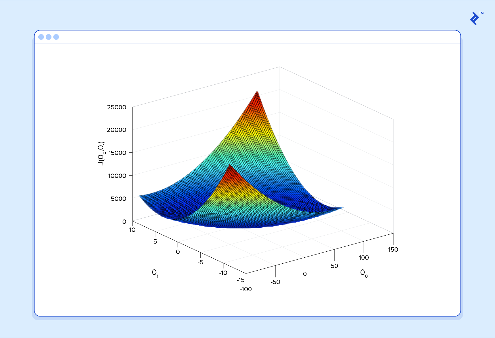

Machine learning
Features
Data Mining
- It is the practice of examining large pre-existing databases in order to generate new information.
Bayesian inference
- It is a statistical paradigm that answers research questions about unknown parameters using probability statements.
Machine learning
- It is the field of study that gives computers the ability to learn without being explicitly programmed.
- It deals with programming the computer systems to make them learn and improve with data and experience.
- Learning means recognizing and understanding the input data and decisions based on the supplied data.
- It is used in various fields such as:
- Vision processing
- Language processing
- Forecasting
- Pattern recognition
- Games
- Data mining
- Expert systems
- Robotics
- Steps involved are:
- Defining a Problem
- Preparing Data
- Evaluating Algorithms
- Improving Results
- Presenting Results
- A computer program is said to learn from experience E with respect to some task T and some performance measure P, if its performance on T, as measured by P, improves with experience E.
- The goal of machine learning is never to make "perfect" guesses, because it deals in domains where there is no such thing. The goal is to make guesses that are good enough to be useful.
- Predictor Function
- Mathematically for machine learning, the goal is to devise a mathematical function h(x) called predictor or hypothesis. Learning consists of using sophisticated mathematical algorithms to optimize this function so that, given input data x about a certain domain, it will accurately predict some interesting value h(x). Example:
h(x) = θ0 + θ1 * x
- θ0 and θ1 are called coefficients/parameters of the predictor function.
- Cost Function or Loss Function
- The wrongness measure in estimating the almost accurate value of predictor function h(x) is known as the cost function or loss function.Example:
J(θ0, θ1) = 1/2m Σ (h(xt,i) - y)2 where i ranges from 1 to m
- The ultimate goal of machine learning is to find the coefficients for predictor h(x) such that our cost function J (θ0, θ1) is as small as possible.The power of calculus is used to accomplish this.
- The cost function when plotted against the values of θ0 and θ1 gives a bowl shaped plot.
- 
- Any random point on the bowl plot gives the cost of the current values of the coefficients
- The bottom of the bowl is the cost of the best set of coefficients, the minimum of the function.
- The goal is to continue to try different values for the coefficients, evaluate their cost and select new coefficients that have a slightly better (lower) cost. Repeating this process enough times will lead to the bottom of the bowl and you will know the values of the coefficients that result in the minimum cost.
- Gradient Descent
- It is an optimization algorithm used to find the values of parameters (coefficients) of a predictor function (h(x)) that minimizes the cost function (J (θ0, θ1) ).
- This is used when the parameters can not be calculated using linear equations.
- Neural Networks
- Sigmoid Function
- It is a mathematical function having S shaped curve

- Mathematically it is represented as
S(x) = 1 / (1 + e x)
- The output boundaries of this function are (0,1)
Python as a Machine learning language
- Python and its libraries like NumPy, SciPy, IPython, Panda, Seaborn, Scikit-Learn, Matplotlib are used in data science and data analysis.
- It implements popular machine learning techniques:
-
Classification
-
Regression
-
Recommendation
- Clustering
- It offers data mining tasks on large volumes of data using algorithms such as linear regression, logistic regression, Naive Bayes, k-means, k nearest neighbor, and random forest.
- We need to add few external libraries to python to use machine learning capabilities. The steps to install them are:
-
Install the required libraries from command prompt using command:
python -m pip install --user numpy scipy matplotlib ipython jupyter pandas sympy nose sklearn scikit-learn preprocessing
-
Added the path of the installed scripts to path environment variable
-
Upgrade pip installer using command
python -m pip install --user --upgrade pip
Categories of machine learning algorithms
- Supervised learning algorithm The program is "trained" on a pre-defined set of "training examples", which then facilitate its ability to reach an accurate conclusion when given new data.
- Un-supervised learning algorithm The program is given a bunch of data and it itself must find patterns and relationships therein.
- Semi-supervised learning algorithm
- Reinforcement learning algorithm
Examples
Frequently Asked Questions